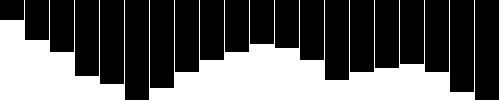
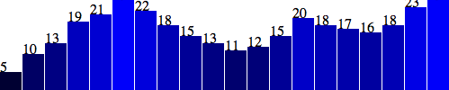
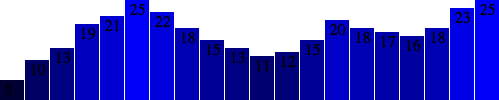

Теперь мы объединим все, что мы изучили в этом руководстве и сгенерируем простую столбиковую диаграмму с использованием D3.
Мы начнем с обзора столбиковой диаграммы, которую мы реализовали с использованием блоков. Потом мы будем использовать этот код для реализации столбиковой диаграммы с использованием SVG-элементов, что даст нам больше гибкости для построения визуальных образов. И в конце мы добавим надписи, указывающие значения на столбиках, чтобы все было предельно понятно.
Сложно представить, но мы можем основательно преобразить этот простой график с использованием блоков.
Новая диаграмма
Изначально надо определиться с размерами SVG.
//Width and height
var w = 500;
var h = 100;
(Конечно, вы можете переменные w и h назвать по-другому, например svgWidth и svgHeight. Используйте то, что более понятно вам. На JavaScript принято писать эффективный код, поэтому вы часто будете видеть имена переменных в одну букву, код без пробелов, и всякий разный код, который невероятно сложно читать, зато более эффективный.)
Дальше мы говорим D3 создать пустой SVG-элементов и добавляем его в DOM:
//Create SVG element
var svg = d3.select("body")
.append("svg")
.attr("width", w)
.attr("height", h);
Код выше добавляет новый <svg> элемент перед закрывающимся тегом
и определяет ширину 500 и высоту 100 пикселей. Также этот код присваивает переменной svg результат выполнения. Это сделано для того, чтобы мы имели быстрый доступ к новому созданному SVG-элементу без каких-либо дополнительных манипуляций типа d3.select("svg").
Дальше вместо создания блоков, мы создаем прямоугольники и добавляем их к svg.
Этот код выбирает все прямоугольники, расположенные внутри svg. Конечно, в SVG еще нет никаких элементов, поэтому возвращается пустое выделение.(Странно, да, но наберитесь терпения. В D3 надо сначала сделать выборку с чем работать, даже если эта выборка изначально будет пустой.)
Дальше метод data(dataset) видит, что у нас в наборе данных 20 значений, поэтому следующий метод enter() вызывается 20 раз. enter() , наоборот, возвращает некоторый шаблон для каждого значения, который ничего общего пока не имеет с прямоугольником.
Дальше для каждого шаблона методом append("rect") добавляется элемент rect в DOM. Как мы уже знаем, каждый rect должен иметь заданные атрибуты x,y,width и height. Мы используем метод attr() для добавления соответствующему элементу rect необходимые атрибуты.
Ок, может и нет. Все наши столбики на месте(Проверьте DOM в веб-инспекторе на демо-странице), но все столбики имеют одни и те же значения для атрибутов x,y,width,height, так что в итоге они наложены друг на друга. Сейчас это вообще не выглядит визуализацией данных.
Давайте первоначально исправим наложение столбиков. Вместо того, чтобы в атрибут x rect'ов вписывать 0, мы будем вписывать динамическое значение, которое будет рассчитываться из i, то есть из порядкового номера текущего значения в наборе данных. Первому столбику в i будет соответствовать 0, и его атрибут x будет иметь значение 0; у второго столбика i=1, и его атрибут х будет иметь значение 21. У третьего столбика атрибут х будет равен 42, и т.д.
.attr("x", function(d, i) {
return i * 21; //Bar width of 20 plus 1 for padding
})
Этот код работает, но он не особенно гибкий. Если наш набор данных будет содержать намного больше значений, столбики не поместятся на нашем SVG, и будут отрисовываться за его пределами, а мы их не будем видеть. Так как один столбик шириной 20 пикселей + 1 пиксель расстояние между столбиками, то на SVG шириной в 500 пикселей может отобразиться 23 столбика(что соответствует 23м значениям в начальном наборе данных). Обратите внимание, как 24й столбик будет обрезан:
Существует хорошая практика рассчитывать width, height, x, y динамически, что позволит вашей визуализации быть более гибкой и масштабироваться в соответствии с вашим первоначальным набором данных.
Как и все остальное в программировании, есть 1000 путей для достижения этого результата. Я буду использовать один простой способ. Первоначально я изменю строку кода, где рассчитывается позиция х каждого столбика:
.attr("x", function(d, i) {
return i * (w / dataset.length);
})
Обратите внимание, как значение х теперь привязано непосредственно в ширине SVG и количеству значений в наборе данных(dataset.length). Как же здорово, что теперь наши столбики равномерно удалены друг от друга и распределены по всей ширине SVG, и без разницы, имеем ли 20 значений в наборе данных:
Теперь мы должны сделать так, чтобы ширина столбика тоже динамически вычислялась в зависимости от ширины SVG и количества значений в наборе данных. Я добавлю новую переменную рядом с местом, где мы задаем ширину и высоту SVG:
//Width and height
var w = 500;
var h = 100;
var barPadding = 1; // <-- New!
и далее буду использовать эту новую переменную в месте, где мы рассчитываем ширину столика. Вместо статического значения в 20 пикселей, ширина столбика будет рассчитываться по такой формуле:
.attr("width", w / dataset.length - barPadding)
Работает! Ширина столбиков и их позиция масштабируются правильно, будь в наборе данных 20 значений, или только пять:
или даже сто:
И в конце, мы поставим в зависимость высоту каждого столбика от величины соответствующего ему значения в наборе данных. Вы, наверное, надеетесь, что мы просто приравняем высоту нашего столбика к величине соответствующего ему значения:
.attr("height", function(d) {
return d;
});
Выглядит фигово. Может, мы просто умножим наши значения на некоторое постоянное значение?
.attr("height", function(d) {
return d * 4; // <-- Times four!
});

Увы, это не так-то просто - мы хотим, чтобы наши столбики росли с нижней границы вверх, а не наоборот. Но не вините в этом D3, все дело в SVG.
Вспомните про SVG-примеры ранее: когда мы рисуем прямоугольник, значения x и y определяют координаты верхнего левого угла. То есть точкой отчета для каждого прямоугольника является верхний левый угол. Нам было бы проще, конечно, установить точку отсчета с левого нижнего угла, но так SVG сделать не может, так как ему пофиг на то, чего хотите вы.
Учитывая то, что наши столбики растут сверху вниз, то как связать вершину нашего столбика с высотой SVG? Вершина каждого столбика может быть выражена как связь между высотой SVG и значением, соответствующем столбику, как показано ниже:
.attr("y", function(d) {
return h - d; //Height minus data value
})
Далее, чтобы начало столбиков было внизу, высоту каждого столбика приравниваем к значению из набора данных:
.attr("height", function(d) {
return d; //Just the data value
});
А теперь, давайте увеличим высоту каждого столбика в 4 раза(Позже я научу, как делать масштабирование с использованием D3, потому что он более удобен):
Добавление цвета является простой процедурой: используем метод attr()и задаем атрибут fill:
.attr("fill", "teal");
Получившийся результат тут. Правда, обычно надо, чтобы цвет зависел от значения в наборе данных. Можно закодировать значение в наборе как цвет(в контексте нашего примера получится, что он одного значения зависит и высота столбика и его цвет).
Для использования данных для управления цветом проще всего написать дополнительную функцию, которая ссылалась бы на d:
Вот результат. Это не особенно популярная методика привязки данных к цвету, но вам, думаю, этот пример полезен. В нашем примере d умножается на 10, и потом устанавливается значения синего цвета в RGB-кодировании. Поэтому, чем больше d, тем столбик будет выше и заполнен более синим цветом. Чем меньше d, тем столбик будет ниже, а его цвет будет более близок к черному.
Метки
Визуализация превосходна! Но иногда надо показать текущее значение в виде текста вместе с визуальным представлением. Для этого мы используем метки, которые очень просто генерируются с помощью D3.
Давайте вспомним SVG пример, когда мы добавляли в нем текстовые элементы:
Знакомо? То, что мы делали для rect, теперь делаем и для text. Сперва делаем выборку, ассоциируем ее с набором данных, добавляем шаблонные элементы, а потом эти шаблонные элементы заменяем text-элементами.
Мы расширим тот код и сделаем так, чтобы в каждом текстовом поле отображалось ассоциированное значение в наборе данных(будем использовать метод text()):
.text(function(d) {
return d;
})
а потом еще больше расширим, добавив атрибуты x и y для позиционирования текста. Проще всего это сделать путем копи-паста предыдущего кода для установки координат для столбиков:
.attr("x", function(d, i) {
return i * (w / dataset.length);
})
.attr("y", function(d) {
return h - (d * 4);
});

Ага! метки значений! Но некоторые сверху попросту обрезаны. Давайте переместим метки немного ниже, чтобы они были расположены внутри столбиков:
.attr("x", function(d, i) {
return i * (w / dataset.length) + 5; // +5
})
.attr("y", function(d) {
return h - (d * 4) + 15; // +15
});

Лучше, но теперь текст не всегда разборчив. Конечно же, мы это можем исправить:
Фантастика! Вполне симпотно, значит готово. Хотя, возможно, вы заметили, что надписи расположены не вполне по центру внутри своих столбиков. Это очень просто исправить. Будем использовать SVG-атрибут text-anchor для горизонтального центрирования текста относительно позиции x.
.attr("text-anchor", "middle")
Теперь изменим код рассчета позиции х для текста. Мы будем делить ширину столбика пополам и прибавлять полученное значение к начальной координате х столбика, тем самым получим его центр:
.attr("x", function(d, i) {
return i * (w / dataset.length) + (w / dataset.length - barPadding) / 2;
})
Также я изменю позицию на пиксель, ну чтобы вообще первоклассно все выглядело:
.attr("y", function(d) {
return h - (d * 4) + 14; //15 is now 14
})
Готово! На этом давайте закончим со столбиковыми диаграммами.